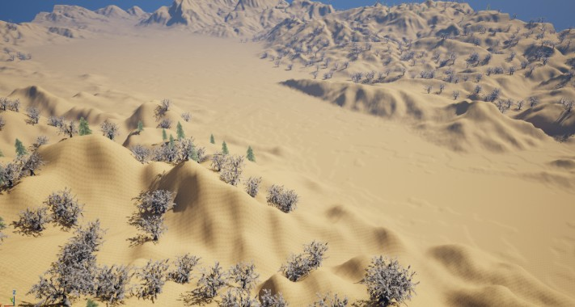

3D SİMÜLASYON
Unreal Engine: Bakırçay Havzası
Gerçekçi Arazi Modellemesi ve Simülasyon

Proje Hakkında
Bu çalışma, Unreal Engine oyun motorunun gücü kullanılarak Bakırçay Havzası'nın topografik yapısının ve bitki örtüsünün 3 boyutlu ortamda gerçekçi bir şekilde simüle edilmesini amaçlamaktadır. Proje geliştirme aşamasındadır.